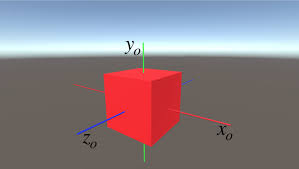
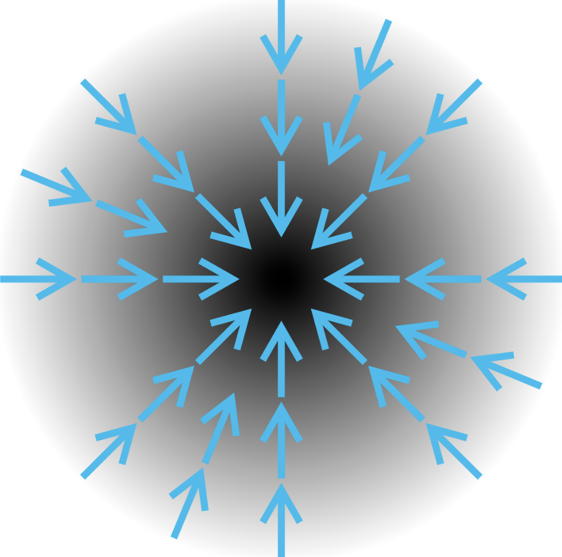
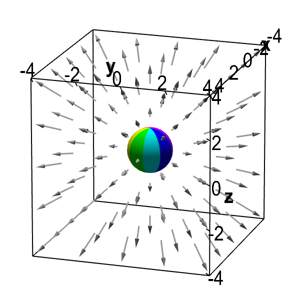
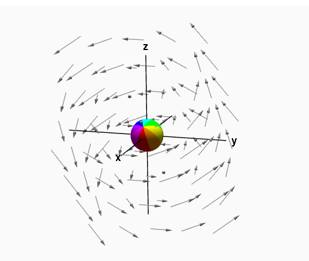

Popular Experiments


Coordinates System Converter
Converts cartesian coordinates to cylindrical and spherical coordinates
Start Experiment

Gradient Calculator
Find the gradient of any vector with the help of gradient calculator
Start Experiment

Divergence Calculator
Find the divergence of any vector with the help of divergence calculator
Start Experiment

Curl Calculator
Find the divergence of any vector with the help of divergence calculator
Start Experiment